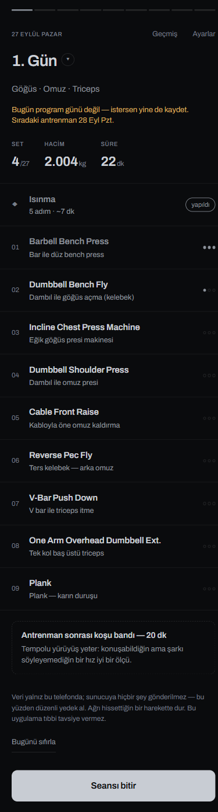
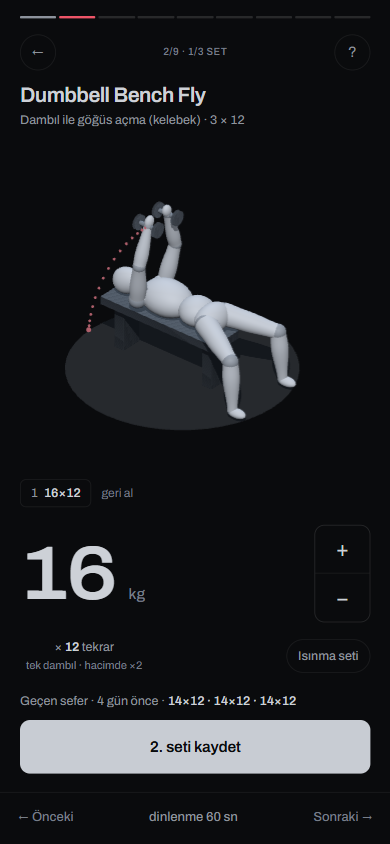
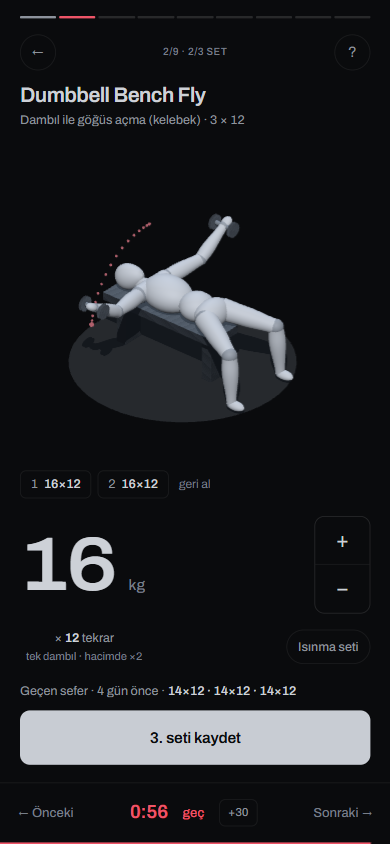
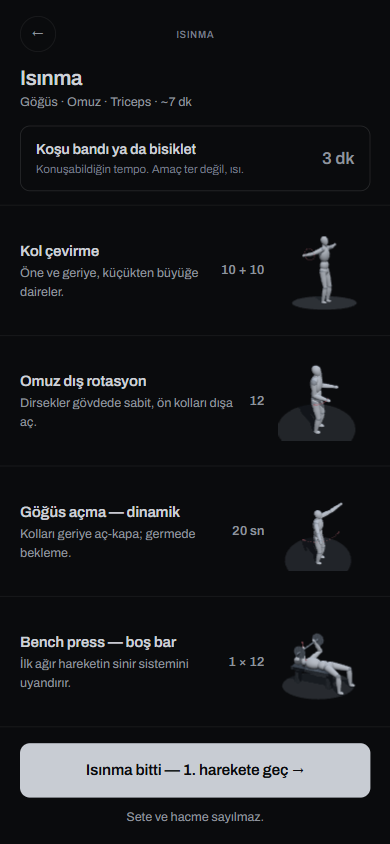
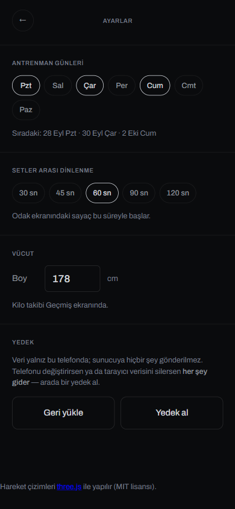
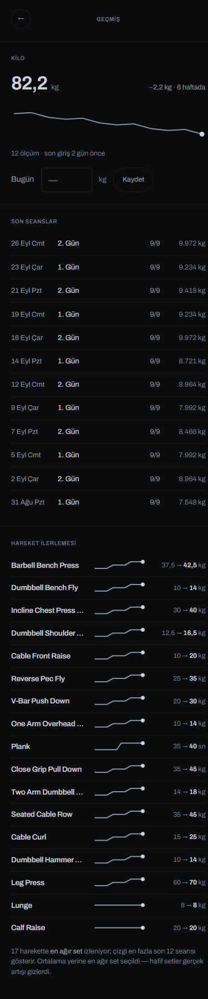

Solda bugünkü ekran (canlı uygulamadan, gerçekçi verilerle 390×844), sağda öneri. Öneri 2. sürümün üç kararını korur: tek yazı ailesi, tek vurgu rengi, kart yok. Ölçüyle bulunan sorunları giderir: 18 punto yerine 7, en sönük gri yerine okunur ikinci ton, tek düğme dili, her hedef en az 44 px. Uygulama koduna dokunulmadı.
Canlı uygulamada 9 ekran/durum, 491 metin öğesi ve 204 dokunma hedefi tarandı. Aşağıdaki öneri ekranları aynı araçla ölçüldü: 222 metin öğesinde 7 punto, 3 ağırlık, en düşük kontrast 4,55:1; 60 dokunma hedefinin 59'u en az 44 px (kalan tek hedef cümle içi bağlantı, WCAG 2.5.8 istisnası); 360 px'lik telefonda taşan ya da kesilen metin yok.
Değişiklik bir "yeniden boyama" değil, dağılmış kararların toplanması. Yazı ailesi (Archivo, pakette, çevrimdışı) ve karanlık zemin aynen kalıyor.
80 · 65045 kg32 · 6501. Gün22 · 650Dumbbell Bench Fly18 · 560Incline Chest Press16 · 450Gövde metni ve açıklama14 · 450Geçen sefer · 4 gün önce12 · 560Set 1 · tek dambıl
ilerleme.js: makine 5). Düğmeler ayrık 64×56, baş parmağın altında.
Dambıl ile göğüs açma · 3 × 12

Dambıl ile göğüs açma · 3 × 12

Göğüs · Omuz · Triceps · ~7 dk

Sıradaki: 28 Eyl Pzt · 30 Eyl Çar · 2 Eki Cum
Saniye. Odak ekranındaki sayaç bu süreyle başlar.
Kilo takibi Geçmiş ekranında.
Veri yalnız bu telefonda. Telefonu değiştirirsen ya da tarayıcı verisini silersen her şey gider; arada bir yedek al.
Ağrı hissettiğin bir harekette dur; bu uygulama tıbbi tavsiye vermez. Hareket çizimleri three.js ile yapılır (MIT).
app.js: toast() önce eskisini kaldırıyor) ve liste bir sonraki günün boş hâline dönüyor.1. Gün · Göğüs, Omuz, Triceps · 27 Eylül
Sıradaki antrenman: 2. Gün, 28 Eyl Pzt

12 ölçüm · son giriş 2 gün önce